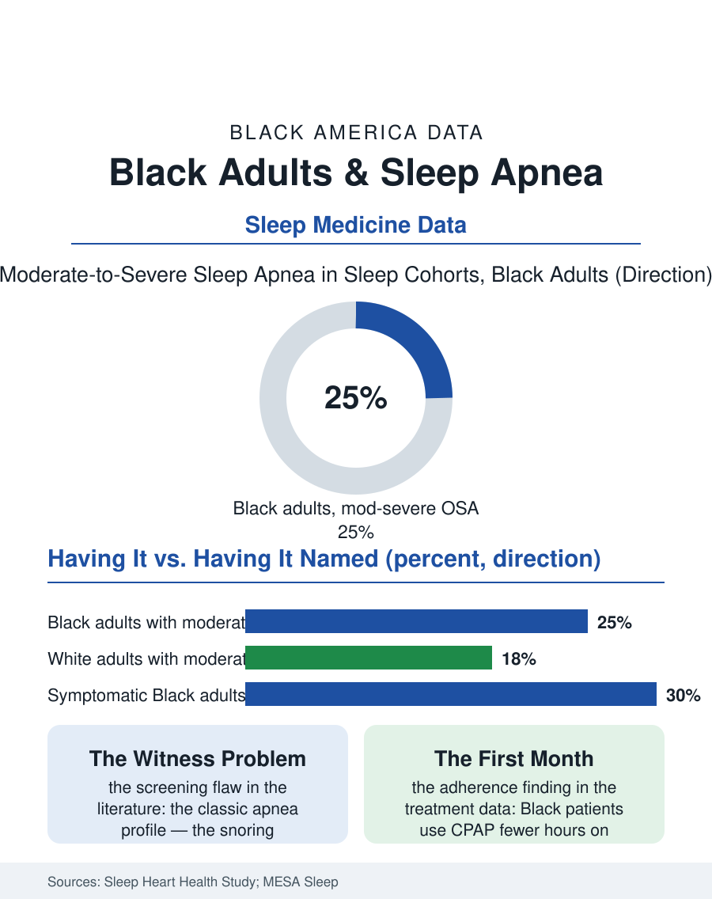

Black Public Health
The Interrupted Night: Black Adults and Sleep Apnea
Black adults carry sleep apnea at elevated rates and are diagnosed later and less often, while its untreated years multiply the chronic disease burden. The apnea file.

Sleep apnea is a mechanical failure with systemic consequences: the airway closes, oxygen falls, the brain jolts the body awake, dozens or hundreds of times a night, for years. Black adults in the sleep studies carry the condition at elevated rates, are diagnosed later and less often relative to their symptom burden, and arrive at treatment with more severe disease. This article reads the apnea file, where the gap between having the condition and having it named is the central statistic.
Prevalence Behind the Snore
The multi-ethnic sleep cohorts, the field's reference data, find obstructive sleep apnea in a substantial share of middle-aged adults, with Black participants showing higher prevalence of moderate-to-severe disease and, in several analyses, the highest average severity indices of any group measured. The anatomy and the arithmetic stack together: higher rates of obesity and hypertension in the risk profile, craniofacial structure distributions, and the simple fact that the condition worsens untreated across the decades when Black adults are least likely to be inside a sleep clinic. The consequences recorded in the outcomes literature are the cardiovascular file's familiar cast, hypertension that resists medication, stroke, arrhythmia, diabetes progression, all conditions where this atlas documents heavy Black burdens, which positions apnea as one of the treatable multipliers hiding inside the chronic disease numbers. The daytime face of the disease, exhaustion misread as laziness, sleepiness at the wheel, morning headaches treated with caffeine for a decade, rarely routes anyone to a sleep study. The bed partner's complaint routes more patients than any symptom scale, which builds a marital-status bias into the diagnosis pipeline that the file notes with care: the single sleeper's apnea has no witness.
The Diagnosis Bottleneck
Diagnosis requires a sleep study, and the study is where the disparity is manufactured. Referral begins in primary care, where screening questionnaires were validated largely in other populations and where the classic presentation, the overweight man who snores, stands in for a disease that in Black women, for instance, more often presents as insomnia and fatigue. Referral rates from equivalent symptom reports differ by race in the health-services studies, and the in-lab study itself is a barrier stacked with smaller barriers: a night away from home, a waitlist measured in months in many markets, insurance authorization, and a machine-covered treatment at the end that many patients have already decided they will hate. Home sleep testing has begun to compress the bottleneck, and the systems that adopted home-first pathways with community-based follow-up report their diagnosis gaps narrowing, evidence that the barrier was logistics rather than biology or belief. Treatment adherence writes the last hard column: CPAP works when worn, and the adherence data show Black patients using the machines fewer hours per night on average, a gap the sleep literature traces to mask fit, follow-up intensity, and the quality of the first month's support rather than to any mystery of motivation, since programs that fund coaching and early troubleshooting close much of it.
The Work of the Night
The apnea file intersects the working life of this atlas in a specific place: the drowsy commute and the safety-sensitive shift. Transportation and warehouse work, sectors heavy with Black workers, regulate fatigue for a living, and federal screening rules for commercial drivers have made the sleep study a job requirement for thousands, a door into diagnosis that arrives with an employment threat attached. Drivers who fear losing certification avoid the study or abandon the mask, and the safety literature's answer, treatment pathways that protect the license of the treated driver, exists precisely because untreated apnea behind a wheel is the deadlier risk. The night-shift economy adds its own layer, rotating schedules scrambling the sleep the machine is meant to protect. The file closes on the research horizon: newer therapies, oral appliances, positional devices, and surgical options, are widening the choices beyond the mask, while wearables and home testing push detection toward the population scale the prevalence numbers demand. The central statistic stands until then: a common, consequential, treatable condition, present in Black adults at elevated rates, named in a fraction of them, and named latest in those with the most to lose from its untreated years. The airway keeps its own hours. The system's job is to meet it there.
More in Black Public Health
Hypertension Among Black Adults: Prevalence, Control, and Consequences
About 55 percent of Black adults have hypertension — the highest rate of any U.S. group. Prevalence, onset, control, and the stroke, heart, and kidney consequences in the data.
Diabetes Among Black Adults: Prevalence and Complications
Nearly one in five Black adults has diabetes, diagnosed or undiagnosed — and its complications fall with particular weight. The CDC data on prevalence, control, and outcomes.
Black Life Expectancy: The Gap at Birth and Its Causes
Black life expectancy at birth is about 73 years, roughly five years below the national figure — the summary measure of every health gap in this section. The CDC data.
Source: Sleep Heart Health Study and Multi-Ethnic Study of Atherosclerosis (MESA) Sleep ancillary data; American Academy of Sleep Medicine reports.